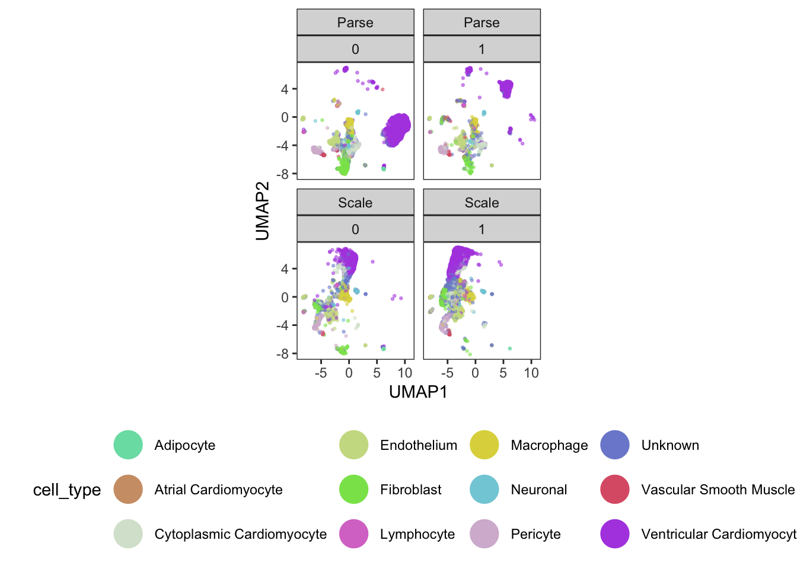

setwd("~/Documents/Developer/vsriram24.github.io/posts/sasc-workshop2")
#load required packages
library(monocle3)
library(ggplot2)
library(tidyverse)
library(viridis)
library(randomcoloR)
library(kBET)
library(cowplot)
library(harmony)
library(uwot)
library(batchelor)In this week’s blog, I’ll be summarizing takeaways and a code example from the Seattle Area Single Cell (SASC) User Group’s second workshop of the year, which was held on May 16th, 2024. Slides from the workshop can be found here.
The SASC User Group, directed by Dr. Mary O’Neill at the Brotman Baty Institute, is designed to create connections and foster community among single-cell researchers at Fred Hutch, UW Medicine, Seattle Children’s, as well as other Seattle-area researchers working with single-cell data. If you are interested in joining the group, you can subscribe to their listserv here. The group holds quarterly meetings rotating across the three campuses, each with a different focus. May’s workshop was dedicated to applying batch correction methods using Monocle 3 to analyze single-cell RNA-seq (scRNA-seq) data.
All credit for the data and code in this workshop goes to Mary and the folks at the BBI who helped organize this community. I have simply summarized their content and added a few clarifiers in various sections! I claim no significant knowledge myself of working with single cell data - in the future, I hope to release a post that highlights some more of the biological context highlighted through this workshop. You can follow along with the original tutorial and code example at the SASC GitHub page here.
And so, with context out of the way, let’s get started!
1. Background
Monocle 3 is “an analysis toolkit for single-cell RNA-seq data”, developed by the Trapnell Lab at the University of Washington Department of Genome Sciences.
When analyzing any form of data, especially single cell data, it is important to keep the right sources of variation (see Aquino, Bisiaux, Li et al., Nature 2024). Batch effects refer to technical, non-biological factors that cause variation in data, and must be appropriately addressed to avoid confounding in results.
The best way to get around batch effects is to avoid introducing them in the first place! Nothing can salvage a poor study design. In a similar vein, it is important to determine whether or not there are actually batch effects in the first place that are influencing your data. Sometimes, batch corrections can introduce more artifacts than they alleviate. So, when applying batch correction methods, apply them thoughtfully. Know what they are doing, what to use them for, and where they can lead you astray.
A variety of batch correction methods exist for scRNA-seq data (see Antonsson, Melsted, bioRXiv 2024). Generally, single cell analysis falls into two camps:
Batch correction is only for visualization. The batch category is used as a covariate in downstream analysis
Batch correction is incorporated into the data processing pipeline. Batch corrected data are used in downstream analysis.
For our code example, the data we are using represent a subset of heart data generated by the BBI after processing through Scale Biosciences’ and Parse Biosciences’ respective single-cell sequencing assays. The same samples are used in both assays - each sample had two different donors. Data were mixed together, and then genetic demultiplexing was performed.
We start off by calling our required packages for analysis. In this case, we are using R version 4.4.0. Refer to the following links (or the SASC GitHub page) for help with installing required packages:
2. Reading in the data
With our environment ready to go, we start by reading in our input scRNA-seq data. This dataset is in the form of an S4 object, the standard format for representing sequencing data in Monocle 3. Other packages such as Seurat will have their own file formats to represent data.
#Read in the cell data set containing a random sub-sampling of 35K barcodes from
sasc <- readRDS("BBI_heart_hs_mix_36601humangenes_35000barcodes.RDS")We can use the detect_genes function to count how many cells in our data are expressed above a minimum threshold.
sasc <- detect_genes(sasc)
expressed <- data.frame(rowData(sasc)) %>%
arrange(desc(num_cells_expressed))We then use the n.umi attribute from the output of detect_genes to see how many unique molecular identifiers (UMIs) are in our data.
summary(sasc$n.umi) Min. 1st Qu. Median Mean 3rd Qu. Max.
100 306 837 2084 2311 179927 Looking at the donor attribute of our data, and we see that there are numerous doublet (appearing for both donors) as well as unassigned (appearing for neither donor) UMIs in our data that may belong to either of our donors.
table(sasc$donor)
0 1 doublet unassigned
16410 14938 274 3378 We are also able to see the breakdown of UMIs processed by our Parse and Scale scRNA-seq assays respectively.
table(sasc$batch)
Parse Scale
16263 18737 3. Quality control
Now that we have a breakdown of our data, we can perform quality control.
We start by calculating the mitochondrial DNA content in our scRNA-seq data. The presence of mitochondrial DNA (mtDNA) in our data represents low quality calls.
# Search for genes with "MT" in their name.
fData(sasc)$MT <- grepl(
"MT-",
rowData(sasc)$gene_short_name
)
table(fData(sasc)$MT)
FALSE TRUE
36588 13 Based upon the mitochondrial DNA content we calculated, we can evaluate the percentage of mitochondrial reads in our data.
pData(sasc)$MT_reads <- Matrix::colSums(exprs(sasc)[fData(sasc)$MT,])
pData(sasc)$MT_perc <- pData(sasc)$MT_reads/Matrix::colSums(exprs(sasc))*100
summary(sasc$MT_perc) Min. 1st Qu. Median Mean 3rd Qu. Max. NA's
0.0000 0.1303 0.9560 2.8839 3.2258 61.3861 1 With our calculated mitochondrial percentages, we can start to visualize our data.
Let’s look at a plot of genes by UMIs, colored by mitochondrial percentage.
ggplot(
data.frame(pData(sasc)),
aes(x = n.umi, y = num_genes_expressed)) +
facet_wrap(~batch, nrow = 1) +
geom_point(size = 0.5, alpha = 0.3, aes(color = MT_perc)) +
theme_light() +
theme(axis.text.x = element_text(angle = 45, hjust = 1, size = 14),
axis.title = element_text(size = 16),
axis.text.y = element_text(size = 14),
aspect.ratio = 1) +
scale_color_viridis() +
xlab("UMIs") +
ylab("Number of Genes Captured") +
scale_y_log10() +
scale_x_log10() +
geom_abline(slope = 1, color = "grey") +
geom_hline(yintercept = 200, linetype = "dotted", color = "red") +
geom_vline(xintercept = 300, linetype = "dotted", color = "red")We can see that in spite of the fact that our two samples were identical, different mitochondrial content are exhibited across our assays. In particular, we see a lot of noise for the UMIs that correspond to under 200 genes.
Now let’s look at mitochondrial percentage by donor type.
ggplot(
data.frame(pData(sasc)),
aes(x = donor, y = MT_perc)) +
facet_wrap(~batch, nrow = 1, drop = TRUE, scales = "free_x") +
geom_violin(aes(fill = batch)) +
geom_boxplot(notch = T, fill = "white", width = 0.25, alpha = 0.3, outlier.shape = NA) +
theme_light() +
theme(axis.text.x = element_text(angle = 45, hjust = 1, size = 14),
axis.title = element_text(size = 16),
axis.text.y = element_text(size = 14)) +
xlab("") +
ylab("MT %") +
theme(legend.position = "none")Notch went outside hinges
ℹ Do you want `notch = FALSE`?We again see differences across our assays here in terms of MT percentage - in particular, it seems like we would want to have mitochondrial percentage no greater than 10% in our data.
Now let’s look at UMIs by donor type.
ggplot(
data.frame(pData(sasc)),
aes(x = donor, y = n.umi)) +
facet_wrap(~batch, nrow = 1, drop = TRUE, scales = "free_x") +
geom_violin(aes(fill = batch)) +
geom_boxplot(notch = T, fill = "white", width = 0.25, alpha = 0.3, outlier.shape = NA) +
theme_light() +
geom_hline(yintercept = 300, linetype = "dashed", color = "blue") + #change to thresholds
theme(axis.text.x = element_text(angle = 45, hjust = 1, size = 14),
axis.title = element_text(size=16),
axis.text.y = element_text(size = 14)) +
scale_y_log10() +
xlab("") +
ylab("UMIs") +
theme(legend.position = "none")Here, it seems like data are hard to differentiate under a certain number of UMIs (in this case, 300).
So, let’s establish a QC filter for our data: 300 UMIs, 200 genes, and over 10% mitochondrial content.
#Let's remove everything under 300 UMIs, 200 genes, and over 10% mitochondrial percentage
sasc$qcflag <- ifelse(
sasc$n.umi >= 300 &
sasc$num_genes_expressed >= 200 &
sasc$MT_perc < 10,
"PASS",
"FAIL"
)
table(sasc$qcflag)
FAIL PASS
10180 24820 sasc <- sasc[,sasc$qcflag == "PASS"] #filter out failing barcodes
sascclass: cell_data_set
dim: 36601 24820
metadata(1): cds_version
assays(1): counts
rownames(36601): ENSG00000243485 ENSG00000237613 ... ENSG00000278817
ENSG00000277196
rowData names(6): id gene_short_name ... num_cells_expressed MT
colnames(24820): AGGATAATCTCGGCCTTACAGGTCAGCTT 22_60_95__s4 ...
24_87_10__s1 20_17_34__s4
colData names(12): barcode n.umi ... MT_perc qcflag
reducedDimNames(0):
mainExpName: NULL
altExpNames(0):Let’s also remove UMIs that were mapped to the wrong genome, nonassignable to a donor, or deemed a doublet.
sasc <- sasc[,sasc$organism == "human" & sasc$donor %in% c(0, 1)]
sascclass: cell_data_set
dim: 36601 24216
metadata(1): cds_version
assays(1): counts
rownames(36601): ENSG00000243485 ENSG00000237613 ... ENSG00000278817
ENSG00000277196
rowData names(6): id gene_short_name ... num_cells_expressed MT
colnames(24216): AGGATAATCTCGGCCTTACAGGTCAGCTT 22_60_95__s4 ...
24_87_10__s1 20_17_34__s4
colData names(12): barcode n.umi ... MT_perc qcflag
reducedDimNames(0):
mainExpName: NULL
altExpNames(0):Finally, we have our semi-cleaned data!
table(sasc$batch)
Parse Scale
11474 12742 table(sasc$batch, sasc$donor)
0 1 doublet unassigned
Parse 8637 2837 0 0
Scale 4506 8236 0 04. Pre-processing and data visualization
After completing quality control of our data, we can start to pre-process it.
# remove non-expressed/non-captured genes
hist(fData(sasc)$num_cells_expressed)We can also conduct feature selection for genes if we want. This step is not necessary in every case, but it can help with reducing computational loads. Here, we filter out genes that are not expressed in at least 25 cells.
table(fData(sasc)$num_cells_expressed > 25)
FALSE TRUE
15315 21286 # filter out genes not expressed in at least 25 cells
sasc <- sasc[fData(sasc)$num_cells_expressed > 25, ]
sasc class: cell_data_set
dim: 21286 24216
metadata(1): cds_version
assays(1): counts
rownames(21286): ENSG00000238009 ENSG00000241860 ... ENSG00000278817
ENSG00000277196
rowData names(6): id gene_short_name ... num_cells_expressed MT
colnames(24216): AGGATAATCTCGGCCTTACAGGTCAGCTT 22_60_95__s4 ...
24_87_10__s1 20_17_34__s4
colData names(12): barcode n.umi ... MT_perc qcflag
reducedDimNames(0):
mainExpName: NULL
altExpNames(0):Now we apply the estimate_size_factors function from Monocle 3 to evaluate the relative bias in each cell.
sasc <- estimate_size_factors(sasc)After estimating size factors, we can run preprocess_cds, a standardized workflow in the Monocle 3 package that normalizes the data by log and size factor to address depth differences, and then calculates a lower dimensional space that will be used as the input for further dimensionality reduction.
set.seed(1000)
sasc <- preprocess_cds(sasc) #this may take a few minutesWe can then call reduce_dimensions from Monocle 3 on our data to get down to the most relevant components.
set.seed(1000)
sasc <- reduce_dimension(sasc) #this may take a few minutesNo preprocess_method specified, using preprocess_method = 'PCA'Now let’s plot the cells in our data (first colored by batch and then by donor)
plot_cells(sasc, color_cells_by = "batch")No trajectory to plot. Has learn_graph() been called yet?plot_cells(sasc, color_cells_by = "donor")No trajectory to plot. Has learn_graph() been called yet?We now have our dimensionality-reduced data! Let’s use k-means clustering to categorize our cells into clusters.
One can (and should) spend a lot of time tweaking their clustering parameters. In this situation, we’ll go with a k of 40 for Leiden clustering. It is advisable to try several k-values and/or resolutions during this exploratory data analysis.
sasc <- cluster_cells(
sasc,
k=40,
cluster_method="leiden",
random_seed=1000
) #this may take a few minutes
# add cluster information for each cell
colData(sasc)$k40_leiden_clusters = clusters(sasc)
plot_cells(sasc)Let’s get the top marker genes based on our Leiden clustering:
top_marker_genes <- top_markers(
sasc,
group_cells_by="k40_leiden_clusters"
)
keep <- top_marker_genes %>%
filter(fraction_expressing >= 0.30) %>%
group_by(cell_group) %>%
top_n(3, marker_score) %>%
pull(gene_short_name) %>%
unique()plot_genes_by_group(
sasc,
c(keep),
group_cells_by = "k40_leiden_clusters", #"partition", "cluster"
ordering_type = "maximal_on_diag",
max.size = 3
)Let’s do some more data visualization here. We’ll move out of Monocle 3 and into ggplot2 to improve our flexibility with plotting.
#add UMAP coordinates to the colData for easy plotting
sasc$UMAP1 <- reducedDim(sasc, "UMAP")[,1]
sasc$UMAP2 <- reducedDim(sasc, "UMAP")[,2]#generate a distinguishable color scheme
set.seed(1000)
colpal <- randomcoloR::distinctColorPalette(k=12)
ggplot(
data.frame(pData(sasc)),
aes(x=UMAP1, y=UMAP2, color=cell_type)) +
facet_wrap(~batch+donor) +
geom_point(size=0.5, alpha=0.5) +
theme_bw() +
scale_color_manual(values=colpal) +
theme(legend.position="bottom", aspect.ratio = 1, panel.grid=element_blank()) +
guides(color = guide_legend(override.aes = list(size=8, alpha=1)))
From our visualizations, clusters 2, 3, 4, and 9 all appear to be related cell types - ventricular cardiomyocytes.
We can also see across our four plots that we have clear evidence of both technical (batch) and biological (donor) variation!
5. Quantifying a batch effect
Now that we have evidence of a batch effect, let’s quantify it! We’ll make use of the kBET (k-nearest neighbor batch effect test) package from the Theis lab.
#kBET - k-nearest neighbour batch effect test
data <- reducedDim(sasc)
batch <- sasc$batch
subset_size <- 0.1 #subsample to 10% of the data for speed
subset_id <- sample.int(
n = length(batch),
size = floor(subset_size * length(batch)),
replace=FALSE
)
set.seed(1000)
batch.estimate <- kBET(
data[subset_id,],
batch[subset_id]
) #this may take a few minutesbatch.estimate$summary kBET.expected kBET.observed kBET.signif
mean 0.002482853 0.9888066 0
2.5% 0.000000000 0.9753086 0
50% 0.002743484 0.9917695 0
97.5% 0.006207133 1.0000000 0Based on our rejection rate plot, it really does seem that we have a batch effect in our data. We can simulate a random batch assignment in our data and look at the same plot to convince ourselves of this observation.
set.seed(1000)
randombatch <- sample(sasc$batch, dim(sasc)[2])
batch.estimate.fake <- kBET(
data[subset_id,],
randombatch[subset_id]
) #this may take a few minutesAlright, so we clearly do have a batch effect!
6. Batch correction
Since we’ve proven that we have a batch effect in our data, let’s perform batch correction using Monocle 3. We make use of the align_cds function, a wrapper built around the reducedMNN function from the batchelor package developed by the Marioni Lab at the University of Cambridge.
### Batch correction built-in to Monocle3
set.seed(1000)
bc_cds <- align_cds(
sasc,
alignment_group = "batch",
k = 50
) #this may take a minuteAligning cells from different batches using Batchelor.
Please remember to cite:
Haghverdi L, Lun ATL, Morgan MD, Marioni JC (2018). 'Batch effects in single-cell RNA-sequencing data are corrected by matching mutual nearest neighbors.' Nat. Biotechnol., 36(5), 421-427. doi: 10.1038/nbt.4091bc_cdsclass: cell_data_set
dim: 21286 24216
metadata(2): cds_version citations
assays(1): counts
rownames(21286): ENSG00000238009 ENSG00000241860 ... ENSG00000278817
ENSG00000277196
rowData names(6): id gene_short_name ... num_cells_expressed MT
colnames(24216): AGGATAATCTCGGCCTTACAGGTCAGCTT 22_60_95__s4 ...
24_87_10__s1 20_17_34__s4
colData names(16): barcode n.umi ... UMAP1 UMAP2
reducedDimNames(3): PCA UMAP Aligned
mainExpName: NULL
altExpNames(0):Based on our ‘aligned’ PCA, we can then call reduce_dimensions to generate a corresponding UMAP.
# We can run reduce_dimensions to generate a UMAP from the 'aligned' PCA
set.seed(1000)
bc_cds <- reduce_dimension(
bc_cds,
reduction_method = "UMAP",
preprocess_method = "Aligned"
)
sasc$aligned_UMAP1 <- reducedDim(bc_cds, "UMAP")[,1] #save these in our original cds
sasc$aligned_UMAP2 <- reducedDim(bc_cds, "UMAP")[,2] #save these in our original cds
plot_cells(bc_cds, color_cells_by = "batch")No trajectory to plot. Has learn_graph() been called yet?Finally, we use kBET again to quantitatively verify that we have removed our batch effect from our data.
#Use kBET to quantitatively ask if it removes the batch effect
data <- reducedDim(bc_cds, "UMAP") #note that we are running this on the UMAP
batch <- bc_cds$batch
subset_size <- 0.1 #subsample to 10% of the data
subset_id <- sample.int(
n = length(batch),
size = floor(subset_size * length(batch)),
replace = FALSE
)
set.seed(1000)
batch.estimate <- kBET(
data[subset_id,],
batch[subset_id]
) #this may take a few minutesbatch.estimate$summary kBET.expected kBET.observed kBET.signif
mean 0.02403292 0.8678189 0
2.5% 0.01574074 0.8291152 0
50% 0.02331962 0.8683128 0
97.5% 0.03364198 0.9012346 0While the UMAP looks much better, the kBET metric is telling us that there is still a batch effect. If we run kBET on the ‘aligned’ PCs, the rejection rate is still close to 1. Is it possible we introduced artifacts through our batch correction? Let’s try the Harmony package from the Raychaudhuri Lab at Harvard and see if anything is different.
### Batch correction with Harmony
set.seed(1000)
harm_cds <- RunHarmony(sasc, 'batch') #this may take a few minutesTransposing data matrixInitializing state using k-means centroids initializationHarmony 1/10Harmony 2/10Harmony 3/10Harmony 4/10Harmony converged after 4 iterationsharm_cds #note the "HARMONY" in reducedDimclass: cell_data_set
dim: 21286 24216
metadata(2): cds_version citations
assays(1): counts
rownames(21286): ENSG00000238009 ENSG00000241860 ... ENSG00000278817
ENSG00000277196
rowData names(6): id gene_short_name ... num_cells_expressed MT
colnames(24216): AGGATAATCTCGGCCTTACAGGTCAGCTT 22_60_95__s4 ...
24_87_10__s1 20_17_34__s4
colData names(18): barcode n.umi ... aligned_UMAP1 aligned_UMAP2
reducedDimNames(3): PCA UMAP HARMONY
mainExpName: NULL
altExpNames(0):sascclass: cell_data_set
dim: 21286 24216
metadata(2): cds_version citations
assays(1): counts
rownames(21286): ENSG00000238009 ENSG00000241860 ... ENSG00000278817
ENSG00000277196
rowData names(6): id gene_short_name ... num_cells_expressed MT
colnames(24216): AGGATAATCTCGGCCTTACAGGTCAGCTT 22_60_95__s4 ...
24_87_10__s1 20_17_34__s4
colData names(18): barcode n.umi ... aligned_UMAP1 aligned_UMAP2
reducedDimNames(2): PCA UMAP
mainExpName: NULL
altExpNames(0):# Under the hood, Monocle 3 is using the uwot package to generate UMAPs
harmony_umap <- umap(reducedDim(harm_cds, "HARMONY"), seed=1000) #this may take a minute
sasc$harmony_UMAP1 <- harmony_umap[,1] #save these to our original cds
sasc$harmony_UMAP2 <- harmony_umap[,2] #save these to our original cds#Plot
ggplot(
data.frame(pData(sasc)),
aes(x = harmony_UMAP1, y = harmony_UMAP2, color = batch)) +
geom_point(size=0.5, alpha=0.5) +
theme_bw() +
scale_color_viridis(discrete=T, begin=0.1, end=0.9, option="A") +
theme(legend.position="bottom", aspect.ratio = 1, panel.grid=element_blank()) +
guides(color = guide_legend(override.aes = list(size = 8, alpha = 1)))#Use kBET to quantitatively ask
data <- harmony_umap #note, we could alternatively run kBET at the level of the corrected PCs
batch <- harm_cds$batch
subset_size <- 0.1 #subsample to 10% of the data
subset_id <- sample.int(
n = length(batch),
size = floor(subset_size * length(batch)),
replace = FALSE)
set.seed(1000)
batch.estimate <- kBET(data[subset_id,], batch[subset_id]) #this may take a few minutesbatch.estimate$summary kBET.expected kBET.observed kBET.signif
mean 0.003004115 0.8504115 0
2.5% 0.000000000 0.8106996 0
50% 0.002743484 0.8518519 0
97.5% 0.008230453 0.8973251 0Once again, our UMAP looks better, but our kBET metric suggests that it is still far from perfect.
So what benefit does batch correction offer? This is debatable, but certainly one thing it can do is help in identifying cell types. In our case, our toy dataset already had annotated cell types, but if we didn’t know these ahead of time, batch correction could help us identify them.
#cluster cells that have been aligned and plot these on our original UMAP
bc_cds <- cluster_cells(
bc_cds,
k = 40,
cluster_method = "leiden",
random_seed = 1000
) #this may take a few minutessasc$aligned_clusters <- clusters(bc_cds) #save to original cds object
sasc$aligned_partitions <- partitions(bc_cds) #save to original cds objectggplot(
data.frame(pData(sasc)),
aes(x = UMAP1, y = UMAP2, color = k40_leiden_clusters)) +
geom_point(size = 0.5, alpha = 0.5) +
theme_bw() +
scale_color_manual(values = colpal) +
theme(legend.position = "bottom", aspect.ratio = 1, panel.grid = element_blank()) +
guides(color = guide_legend(override.aes = list(size = 8, alpha = 1)))data.frame(colData(sasc)) %>%
group_by(cell_type) %>%
count(aligned_partitions) %>%
spread(aligned_partitions, n)# A tibble: 12 × 6
# Groups: cell_type [12]
cell_type `1` `2` `3` `4` `5`
<fct> <int> <int> <int> <int> <int>
1 Adipocyte 1 NA NA 63 NA
2 Atrial Cardiomyocyte 5 NA NA NA NA
3 Cytoplasmic Cardiomyocyte 1368 16 3 2 3
4 Endothelium 2309 9 238 NA 31
5 Fibroblast 2666 6 4 NA 1
6 Lymphocyte 192 NA NA NA NA
7 Macrophage 1752 4 11 NA NA
8 Neuronal 445 4 2 NA NA
9 Pericyte 280 880 2 1 NA
10 Unknown 2981 71 34 15 17
11 Vascular Smooth Muscle 116 87 1 NA NA
12 Ventricular Cardiomyocyte 10556 15 1 23 1Even with our imperfect batch correction methods, our analysis has started to show us that some of our original clusters are related (ventricular cardiomyocytes).
7. Differential gene expression
We are going to focus specifically on the ventricular cardiomyocytes for the rest of this code example. We start by subsetting our data down to ventricular cardiomyocytes that belong to clusters 2, 3, 4, and 9.
#combine batch and donor as a new column
sasc$id <- paste(sasc$batch, sasc$donor, sep="_")
#subset ventricular cardiomyocyte data only
cds_vent <- sasc[,sasc$cell_type == "Ventricular Cardiomyocyte" &
sasc$k40_leiden_clusters %in% c("2", "3", "4", "9")]Differential expression analysis can take a long time, so we will run the following code on a subset of pre-defined genes.
gene_list <- c("LINC00486", "TTN", "LINC-PINT", "TAS2R14", "MT-CO1",
"MT-ND4", "FN1", "LAMA2", "XIST", "PDK4", "ZBTB16",
"PPP1R3E", "TMTC1", "NT5DC3", "RBX1", "MRPL45", "ESR2",
"TUBGCP4", "MYH7", "MYL2", "MB", "ACTC1", "TPM1", "MYH6")
cds_subset <- cds_vent[rowData(cds_vent)$gene_short_name %in% gene_list,]We now plot expression levels of these genes, split by donor.
plot_genes_violin(cds_subset, group_cells_by = "donor", ncol = 4) +
theme(axis.text.x=element_text(angle = 45, hjust = 1))Warning in scale_y_log10(): log-10 transformation introduced infinite values.
log-10 transformation introduced infinite values.
log-10 transformation introduced infinite values.Warning: Removed 108135 rows containing non-finite outside the scale range
(`stat_ydensity()`).Warning: Removed 108135 rows containing non-finite outside the scale range
(`stat_summary()`).It is clear that some of our genes are differentially expressed across our two donors. How do we tell what contribution comes from donors and what comes from assay batch? Let’s build models for our data and compare.
In the donor model, we assume there are no batch effects and the only contributing variable is donor.
donor_model <- fit_models(
cds_subset,
model_formula_str = "~donor",
expression_family="negbinomial"
)coefficient_table(donor_model) %>%
filter(term == "donor1") %>%
filter(q_value < 0.05) %>%
select(id, gene_short_name, term, q_value, estimate) %>%
arrange(gene_short_name)# A tibble: 15 × 5
id gene_short_name term q_value estimate
<chr> <chr> <chr> <dbl> <dbl>
1 ENSG00000159251 ACTC1 donor1 5.46e-125 0.671
2 ENSG00000115414 FN1 donor1 0 2.40
3 ENSG00000196569 LAMA2 donor1 2.56e- 88 -0.245
4 ENSG00000231721 LINC-PINT donor1 1.67e-258 -1.91
5 ENSG00000230876 LINC00486 donor1 4.42e-217 1.14
6 ENSG00000198125 MB donor1 1.38e- 55 0.463
7 ENSG00000198804 MT-CO1 donor1 2.12e-214 1.23
8 ENSG00000198886 MT-ND4 donor1 1.25e-170 1.13
9 ENSG00000092054 MYH7 donor1 1.46e-107 -0.460
10 ENSG00000111245 MYL2 donor1 1.76e- 22 0.299
11 ENSG00000004799 PDK4 donor1 5.25e- 29 -0.165
12 ENSG00000212127 TAS2R14 donor1 6.18e-155 -3.80
13 ENSG00000155657 TTN donor1 2.41e- 24 -0.0999
14 ENSG00000229807 XIST donor1 1.59e-167 -5.55
15 ENSG00000109906 ZBTB16 donor1 3.44e-178 -0.579 In our second model, we include batch effects as a predictor variable.
#controlling for batch effects
donor_batch_model <- fit_models(
cds_subset,
model_formula_str = "~donor + batch",
expression_family="negbinomial"
)coefficient_table(donor_batch_model) %>%
filter(term == "donor1") %>%
filter(q_value < 0.05) %>%
select(id, gene_short_name, term, q_value, estimate) %>%
arrange(gene_short_name)# A tibble: 15 × 5
id gene_short_name term q_value estimate
<chr> <chr> <chr> <dbl> <dbl>
1 ENSG00000159251 ACTC1 donor1 6.11e- 6 0.165
2 ENSG00000115414 FN1 donor1 2.00e-200 2.37
3 ENSG00000196569 LAMA2 donor1 3.44e- 72 -0.275
4 ENSG00000231721 LINC-PINT donor1 3.45e- 2 0.228
5 ENSG00000198125 MB donor1 4.23e- 2 -0.0950
6 ENSG00000198804 MT-CO1 donor1 4.17e- 43 0.605
7 ENSG00000198886 MT-ND4 donor1 1.48e- 21 0.422
8 ENSG00000197616 MYH6 donor1 6.76e- 23 0.303
9 ENSG00000092054 MYH7 donor1 7.85e- 16 -0.215
10 ENSG00000111245 MYL2 donor1 1.12e- 13 0.299
11 ENSG00000004799 PDK4 donor1 5.56e-243 -0.534
12 ENSG00000212127 TAS2R14 donor1 9.17e- 3 -0.527
13 ENSG00000155657 TTN donor1 2.00e- 36 0.142
14 ENSG00000229807 XIST donor1 1.15e-167 -5.56
15 ENSG00000109906 ZBTB16 donor1 3.01e- 3 -0.0961Comparing these two models, we can see that some of our genes are significantly influenced by the introduction of batch as a predictor.
# Comparing models of gene expression
compare_models(donor_batch_model, donor_model) %>%
select(gene_short_name, q_value) %>%
data.frame() gene_short_name q_value
1 LINC00486 0.000000e+00
2 TTN 4.329415e-286
3 FN1 1.000000e+00
4 LAMA2 1.020045e-02
5 PDK4 0.000000e+00
6 LINC-PINT 0.000000e+00
7 ZBTB16 6.655693e-187
8 TAS2R14 0.000000e+00
9 TMTC1 2.872632e-05
10 NT5DC3 5.740679e-02
11 MYL2 1.000000e+00
12 PPP1R3E 4.636225e-01
13 MYH6 1.999277e-62
14 MYH7 5.726891e-61
15 ESR2 2.311010e-02
16 ACTC1 4.529192e-170
17 TUBGCP4 5.352325e-01
18 TPM1 9.684985e-01
19 MRPL45 1.000000e+00
20 MB 4.086623e-205
21 RBX1 1.000000e+00
22 XIST 1.000000e+00
23 MT-CO1 7.757731e-279
24 MT-ND4 0.000000e+00Let’s take a closer look at two example genes: LINC00486 and TTN, both of which have highly significant q-values (close to 0).
# Get normalized counts
cntmtx <- normalized_counts(cds_subset)
cds_subset$LINC00486 <- cntmtx["ENSG00000230876",]
cds_subset$TTN <- cntmtx["ENSG00000155657",]#the case of LINC00486
a <- ggplot(
data.frame(pData(cds_subset)),
aes(x = donor, y = LINC00486)) +
geom_violin(aes(fill = donor)) +
geom_boxplot(width = 0.2, fill = "white", alpha = 0.3, outlier.shape = NA) +
theme_bw()
b <- ggplot(
data.frame(pData(cds_subset)),
aes(x = batch, y = LINC00486)) +
geom_violin(aes(fill = "salmon")) +
geom_boxplot(width=0.2, fill = "white", alpha = 0.3, outlier.shape = NA) +
theme_bw()
c <- ggplot(
data.frame(pData(cds_subset)),
aes(x = id, y = LINC00486, fill = donor)) +
geom_violin() +
geom_boxplot(width=0.2, fill = "white", alpha = 0.3, outlier.shape = NA) +
theme_bw()
plot_grid(a + theme(legend.position = "none"),
b + theme(legend.position = "none") + ylab(""),
c + theme(legend.position = "none") + ylab(""),
labels=c("A", "B", "C"),
nrow = 1)From our model, we can see that the batch variable was the primary contributor to differences in LINC00486 expression across our data.
coefficient_table(donor_model) %>%
filter(gene_short_name == "LINC00486" & term =="donor1") %>%
select(id, gene_short_name, term, q_value, estimate) # A tibble: 1 × 5
id gene_short_name term q_value estimate
<chr> <chr> <chr> <dbl> <dbl>
1 ENSG00000230876 LINC00486 donor1 4.42e-217 1.14coefficient_table(donor_batch_model) %>%
filter(gene_short_name == "LINC00486" & term %in% c("donor1", "batchScale")) %>%
select(id, gene_short_name, term, q_value, estimate) # A tibble: 2 × 5
id gene_short_name term q_value estimate
<chr> <chr> <chr> <dbl> <dbl>
1 ENSG00000230876 LINC00486 donor1 1 0.0133
2 ENSG00000230876 LINC00486 batchScale 0 3.64 #the case of TNN
x <- ggplot(
data.frame(pData(cds_subset)),
aes(x = donor, y = TTN)) +
geom_violin(aes(fill = donor)) +
geom_boxplot(width = 0.2, fill = "white", alpha = 0.3, outlier.shape = NA) +
theme_bw()
y <- ggplot(
data.frame(pData(cds_subset)),
aes(x = batch, y = TTN)) +
geom_violin(aes(fill = "salmon")) +
geom_boxplot(width = 0.2, fill = "white", alpha = 0.3, outlier.shape = NA) +
theme_bw()
z <- ggplot(
data.frame(pData(cds_subset)),
aes(x = id, y = TTN, fill = donor)) +
geom_violin() +
geom_boxplot(width = 0.2, fill = "white", alpha = 0.3, outlier.shape = NA) +
theme_bw()
plot_grid(
x + theme(legend.position="none"),
y + theme(legend.position="none") + ylab(""),
z + theme(legend.position="none") + ylab(""),
labels=c("A", "B", "C"),
nrow = 1)On the other hand, in the case of TTN, we see that both donor and batch affected its expression.
coefficient_table(donor_model) %>%
filter(gene_short_name == "TTN" & term =="donor1") %>%
select(id, gene_short_name, term, q_value, estimate) # A tibble: 1 × 5
id gene_short_name term q_value estimate
<chr> <chr> <chr> <dbl> <dbl>
1 ENSG00000155657 TTN donor1 2.41e-24 -0.0999coefficient_table(donor_batch_model) %>%
filter(gene_short_name == "TTN" & term %in% c("donor1", "batchScale")) %>%
select(id, gene_short_name, term, q_value, estimate) # A tibble: 2 × 5
id gene_short_name term q_value estimate
<chr> <chr> <chr> <dbl> <dbl>
1 ENSG00000155657 TTN donor1 2.00e-36 0.142
2 ENSG00000155657 TTN batchScale 0 -0.4058. Key takeaways and suggestions
Do not blindly apply batch correction! You risk introducing more artifacts than you remove.
In general, it is better to use batch correction methods for data exploration and visualization rather than analysis.
If you have a batch effect, model it in your downstream analysis (i.e include it as a covariate) instead of modifying your data directly.
9. Conclusions
This concludes the content that was covered in the SASC User Group workshop on batch correction. I’d like to give a huge thank you again to Mary and the team at the BBI for organizing this tutorial and sharing it freely with the public! I look forward to covering more from these meetings in the future, as well as sharing my own thoughts and exploration of single cell data down the road.